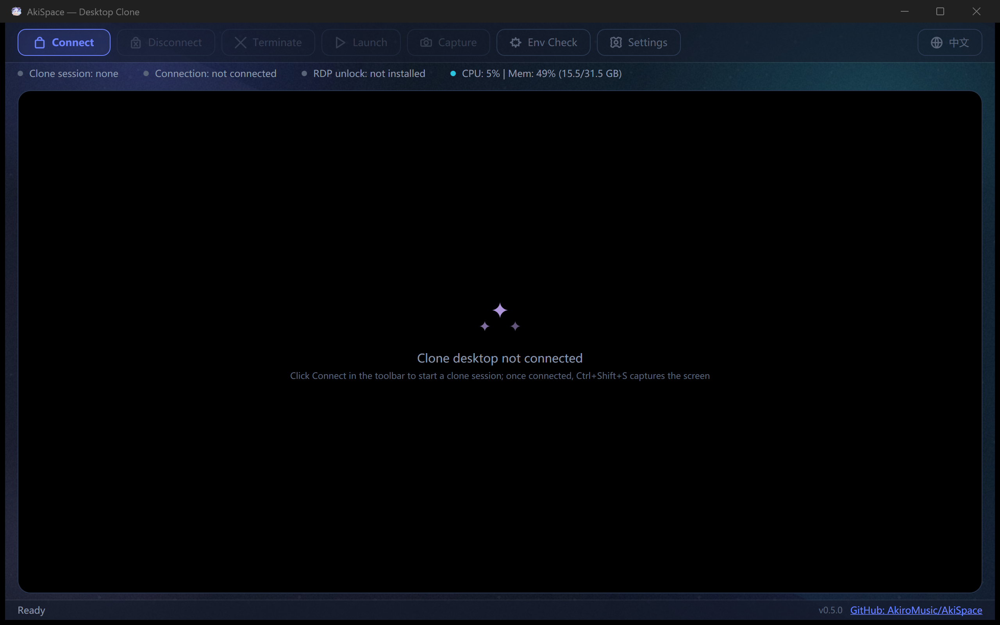

One-click clone
Click Connect or press Ctrl+Shift+D to instantly connect; the embedded window shows the clone desktop live.
Create a second independent desktop session on a single Windows machine — run full-screen apps, games and automation in the clone while your main desktop keeps working normally.
AkiSpace ("Desktop Clone") is built on Windows multi-session RDP (unlocked via RDP Wrapper/TermWrap), an embedded MSTSC ActiveX viewer and cross-session input forwarding, with two connection modes: Standard RDP over a separate local account, or a Windows child session (identical to BetterGI's technique). Ships as a WPF app with an Aurora Glass UI, bilingual interface and system tray integration.
Click Connect or press Ctrl+Shift+D to instantly connect; the embedded window shows the clone desktop live.
Toolbar button, tray item or Ctrl+Shift+S captures the clone desktop straight to the host clipboard (Bitmap + PNG formats).
Four switchable color packs — Aurora Dusk & Amber Afterglow (dark), Mint Fresh & Pearl Blush (light) — with live preview, an animated aurora backdrop and liquid-glass cards.
The entire interface — windows, dialogs, tray menu, even the elevated fix console — switches with one click on the toolbar globe button; the choice persists.
Standard RDP (separate local account) or Child Session (same user, BetterGI-style) — switch in Settings.
Host relative mouse motion is captured and forwarded to the clone session by an auto-launched replay agent, with cursor auto-clip & hide; hold Alt to temporarily release the cursor back.
One-click detection & repair for RDP status, multi-session, RDP Wrapper, StartRCM and firewall, with a mode-aware verdict; standard RDP can be unlocked with one click (SHA-256-verified pinned download).
System-wide CPU & memory in the status bar; minimize to tray with global hotkeys, and launch programs inside the clone via Task Scheduler with admin rights.

| Component | File | Responsibility |
|---|---|---|
| Session Mgmt | Native/WtsApi.cs | WTS session query/listen status |
| Input Interop | Native/User32.cs | Raw Input, SendInput, ClipCursor, GUI thread info |
| RDP Viewer | Controls/RdpActiveXHost.cs | AxHost wraps MsRdpClient11, dual-mode connect (StdRDP/ChildSession), retry logic |
| IPC | Ipc/Pipes.cs, Ipc/IpcProtocol.cs | Named Pipes + Binary Frame Protocol |
| Mouse Capture | Input/RawInputMonitor.cs | Dedicated STA thread, RIDEV_INPUTSINK |
| Mouse Forward | Input/MouseForwarder.cs | Accumulate/direction-reverse flush/10ms batch/Alt release |
| Cursor Mgmt | Input/CursorCapture.cs | ClipCursor + ShowCursor(false) paired restore |
| Elevated Launch | Services/ProcessLauncher.cs | Task Scheduler COM (TASK_RUN_USE_SESSION_ID) |
| Env Check | Services/EnvironmentVerifier.cs | 10 prerequisite checks/fixes |
dotnet build src/AkiSpace/AkiSpace.csproj # Clone account (Standard RDP mode) net user AkiSpaceUser <your-password> /add net localgroup Administrators AkiSpaceUser /add
AkiSpace（桌面分身）构建于 Windows 多会话 RDP（经 RDP Wrapper/TermWrap 解锁）、内嵌 MSTSC ActiveX 查看器与跨会话输入转发之上，支持两种连接模式：独立本地账户的标准 RDP，或与 BetterGI 同款的 Windows 子会话。以 WPF 应用交付，配有 Aurora Glass 界面、中英双语与系统托盘集成。
点击「连接」或按 Ctrl+Shift+D 立即连接，内嵌窗口实时显示分身桌面。
工具栏按钮、托盘菜单或 Ctrl+Shift+S 把分身桌面直接截取到主系统剪贴板（同时含 Bitmap 与 PNG 两种格式）。
四套可切换配色包——极光暮色 / 琥珀霞光（深色）、薄荷清新 / 珍珠雾粉（浅色），设置内即时预览；极光动效背景与液态玻璃卡片。
整个界面——窗口、对话框、托盘菜单乃至管理员修复控制台——由工具栏地球按钮一键切换，选择持久化。
「标准 RDP」（独立本地账户）与「子会话」（当前账户，BetterGI 同款）在设置中切换。
捕获主桌面相对鼠标移动，由自动启动的回放 Agent 转发到分身会话，光标自动裁剪/隐藏；按住 Alt 临时释放光标回主桌面。
一键检测并修复 RDP 状态、多会话、RDP Wrapper、StartRCM、防火墙等前置条件，给出模式感知结论；标准 RDP 支持一键解锁（下载钉定版本并按 SHA-256 校验）。
状态栏实时显示系统级 CPU 与内存；最小化到托盘、全局热键，并可通过 Task Scheduler 以管理员权限在分身中启动程序。
| 组件 | 文件 | 职责 |
|---|---|---|
| 会话管理 | Native/WtsApi.cs | WTS 会话查询/监听状态 |
| 输入互操作 | Native/User32.cs | Raw Input, SendInput, ClipCursor, GUI 线程信息 |
| RDP 查看器 | Controls/RdpActiveXHost.cs | AxHost 封装 MsRdpClient11，双模式连接（标准RDP/子会话），重试连接 |
| IPC | Ipc/Pipes.cs, Ipc/IpcProtocol.cs | 命名管道 + 二进制帧协议 |
| 鼠标捕获 | Input/RawInputMonitor.cs | 独立 STA 线程，RIDEV_INPUTSINK |
| 鼠标转发 | Input/MouseForwarder.cs | 累积/方向反转即刷/10ms 批处理/Alt 释放 |
| 光标管理 | Input/CursorCapture.cs | ClipCursor + ShowCursor(false) 配对恢复 |
| 提权启动 | Services/ProcessLauncher.cs | Task Scheduler COM (TASK_RUN_USE_SESSION_ID) |
| 环境检查 | Services/EnvironmentVerifier.cs | 10 项前置条件检测/修复 |
dotnet build src/AkiSpace/AkiSpace.csproj # Clone account (Standard RDP mode) net user AkiSpaceUser <your-password> /add net localgroup Administrators AkiSpaceUser /add